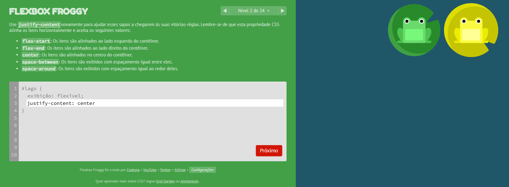
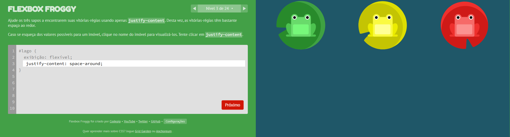
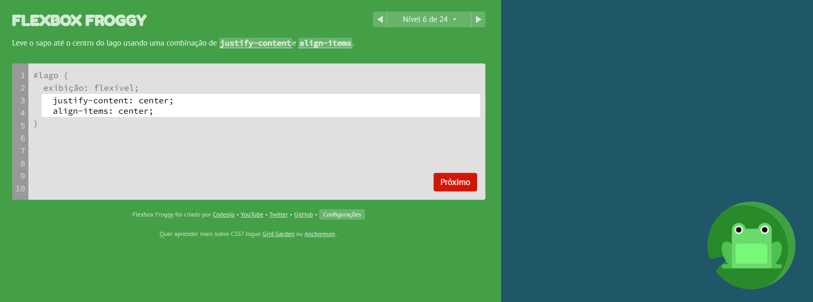
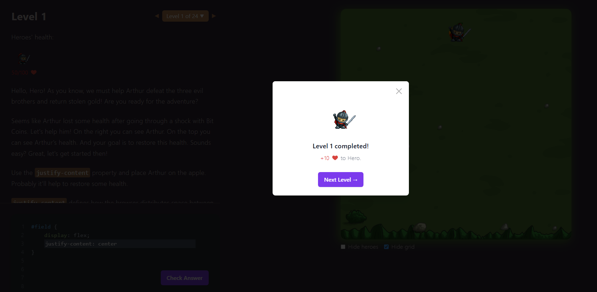
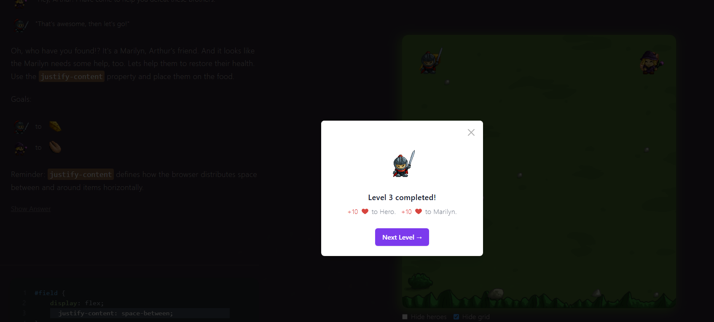
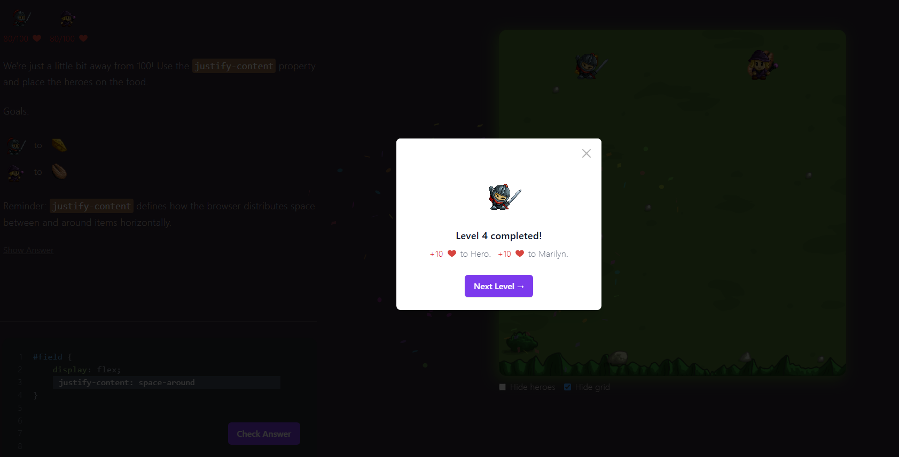

Victor Lucas Almeida Pinheiro
Nível 2: Tive dificuldade para entender o jogo.
Nível 3: Fiquei confuso com esse nível porque os valores do 'justify-content' são parecidos.
Nível 6: Tive dificuldade porque não lembrava que precisava usar tanto 'justify-content' quanto 'align-items' pra centralizar o sapo no meio. Achei que só uma das propriedades bastava.
Level 1: Dificuldade para compreender o game.
Level 3: Tive dificuldade porque não entendi exatamente onde o alimento estava, então fiquei em dúvida sobre qual valor de justify-content usar.
Level 4: Tive dificuldade porque usei 'space-around' achando que os heróis iam ficar no lugar certo, mas acabou deixando espaço demais e eles não ficaram exatamente em cima da comida.
display: flex – Ativa o Flexbox no container.justify-content – Alinha os itens no eixo principal (horizontal por padrão).align-items – Alinha os itens no eixo cruzado (vertical por padrão).align-self – Permite que um item se alinhe diferente dos outros.flex-direction – Muda a direção do eixo principal (row, column, etc).order – Altera a ordem de exibição dos itens.flex-wrap – Permite que os itens quebrem linha.gap – Define o espaçamento entre os itens.Em um layout de cards responsivos, como por exemplo uma galeria de produtos: